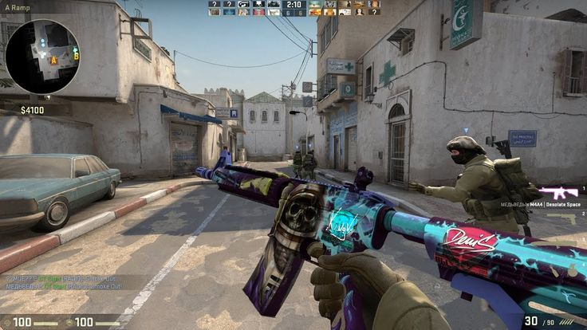
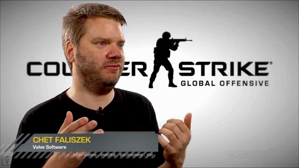
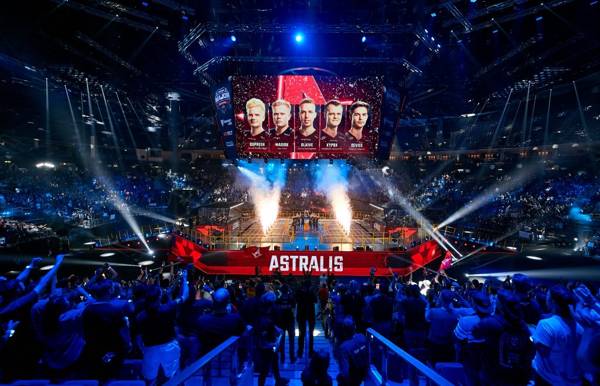

Counter-Strike: Global Offensive
Игровой процесс
Как и предыдущие игры серии, Counter-Strike: Global Offensive является трёхмерным многопользовательским шутером от первого лица, в котором игроки распределяются по двум командам и сражаются друг против друга. В игре представлены две команды: террористы и спецназ, а также содержит несколько многопользовательских режимов игры: обычный и соревновательный режим (разминирование бомбы, спасение заложников), королевская битва, военные игры (гонка вооружений, уничтожение объекта, перелётные снайперы), бой насмерть, зачистка, совместный налёт, напарники и страж. В первом сценарии игроки, играющие за команду террористов, должны заложить бомбу в одной из нескольких точек закладки, а спецназ — успешно её разминировать. Во втором сценарии игрокам из команды террористов необходимо не дать противоборствующей команде спасти заложников, которых они похитили.
Разработка и выпуск
Первые новости о разработке игры появились вместе с официальным анонсом — 12 августа 2011 года. Слухи о том, что компания Valve, ответственная за серию игр Counter-Strike, разрабатывает новую часть игры (последней на тот момент основной игрой серии, не считая отдельной версии, направленной на азиатскую аудиторию, была Counter-Strike: Source 2004 года) распространились несколькими днями ранее[5][6]. В анонсе игры сообщалось о том, что разработчики обещают сохранить основы игрового процесса «классической» версии игры — Counter-Strike 1.6, а также добавить новые карты для многопользовательских сражений (среди которых будут ремейки старых карт с улучшенной графикой), модели бойцов и оружие. В числе прочих усовершенствований ожидались онлайн-таблицы рекордов и система автоматического подбора соперников. Говорилось о том, что игра выйдет в начале 2012 года, а в 2011 году она будет продемонстрирована на выставках PAX Prime и Eurogamer Expo. Игра разрабатывалась для персонального компьютера с операционными системами Windows и Mac OS X, и для игровых консолей PlayStation 3 и Xbox 360 (там она вышла в онлайн-сервисах PlayStation Network и Xbox Live соответственно). Некоторые сайты предположили, что Counter-Strike:Global Offensive будет базироваться на последней версии игрового движка Source, собственной разработки Valve, на которой построены все последние игры студии; однако в официальном анонсе нет никаких уточнений, касающихся технологической части[7][8][9][10][11][12]. Несколько крупных сайтов опубликовали «трейлер игры», который на самом деле является перемонтированным любителем (в частности, изменена надпись в конце ролика) трейлером другой части, Counter-Strike Online.
Киберспортивная дисциплина
Counter-Strike: Global Offensive, как и её предшественницы Counter-Strike и Counter-Strike: Source, является киберспортивной дисциплиной. Самыми крупными и престижными турнирами считаются турниры серии Major и турниры серии Blast Premier. Major-турниры проводятся при совместной поддержке Valve и компании, которая проводит турнир. Первым таким турниром стал DreamHack Winter 2013, который имел призовой фонд в 250 000 $, а начиная с MLG Columbus 2016, призовой фонд стал составлять 1 000 000 $. На 2019 год было проведено 15 таких турниров. Ещё одним крупным событием является лига Blast Premier, так, на Blast Premier 2020 общий призовой фонд составил 4 250 000 $. В 2021 году прошел PGL Major Stockholm 2021 с общим призовым фондом 2 000 000 $[49]. Также существует множество других соревнований, например IEM, ESL, Blast Pro Series и др.
